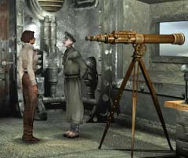
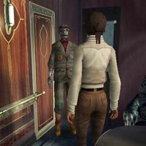

| 概要 | 地図 | |
| 淡いヒント集 | ヒント集 | 的確なヒント集 |
| 攻略最短ルート | Syberia 攻略へ |
| << 前の段階へ | 地域選択へ |
バロクシュタット
|
国境にて
講義を聴き終わったあなたは、ポンス教授と再びあわなければならない。そして、機関車のゼンマイを巻き、オスカーの指示に従えばよいのだが。 ・実験室へ行き、人形を返してもらう ・機関車のねじを巻く ・窓口にいるオスカーに指示を仰ぐ ・大佐からビザを発行してもらう ということをやらねばならない。大佐は簡単にビザを発行してくれそうもないが、どうしたらよいだろうか。
実験室
・人形だけではなく、講義ノートもらえるので、忘れずにもらっておこう。 ・それ以外にも、ハンスについての情報など重要な内容を話してくれる。メモを取る必要はないが、聞いておいて損はないだろう。
ゼンマイを巻く装置
・これを使わなければ、機関車のゼンマイは巻けない。 ・どのように使うかは、覚えているから説明は不用だろう。
窓口
 ・オスカーが窓口で待っているはずだ。 ・切符をもらうにはどうしたらいいだろうか? ビザが必要だと彼は言っているはずだ。 ・では、ビザはどこにあるのだろうか。まだ行っていない場所を探さなくてはならない。
大佐
 ・大佐がビザを発行してくれる。 ・しかし、今は特別警戒中である。なぜならば、コサック兵が国境の向こうにいるらしい。 ・本当に国境にコサック兵がいるのだろうか。自分の目で調べてみよう。 ・大佐はどのような人だろうか? 周囲を調べると手がかりがあるかもしれない。
望遠鏡
・これはコサック兵だろうか? ・ピントが合っていない。本当にコサック兵がちゃんと調べなければならない。
机

・コサック兵ではないことを知ったあなたは、この事実を大佐に伝えなくてはならない。 ・大佐は目が悪いのだろう。 ・もし、視力を回復させることができれば、大佐は真実を知るだろう。 ・視力を一時的に回復させると言うことができるだろうか? 手持ちの品と、文献を調べてみよう。
機関車の中
 ・オスカーには切符を渡さなくてはならない。 ・しかも、先ほど窓口でもらったばかりである。 |
| << 前の段階へ | 地域選択へ |
| 概要 | 地図 | |
| 淡いヒント集 | ヒント集 | 的確なヒント集 |
| 攻略最短ルート | Syberia 攻略へ |
Syberia
| 目次へ戻る | ページの上部へ |